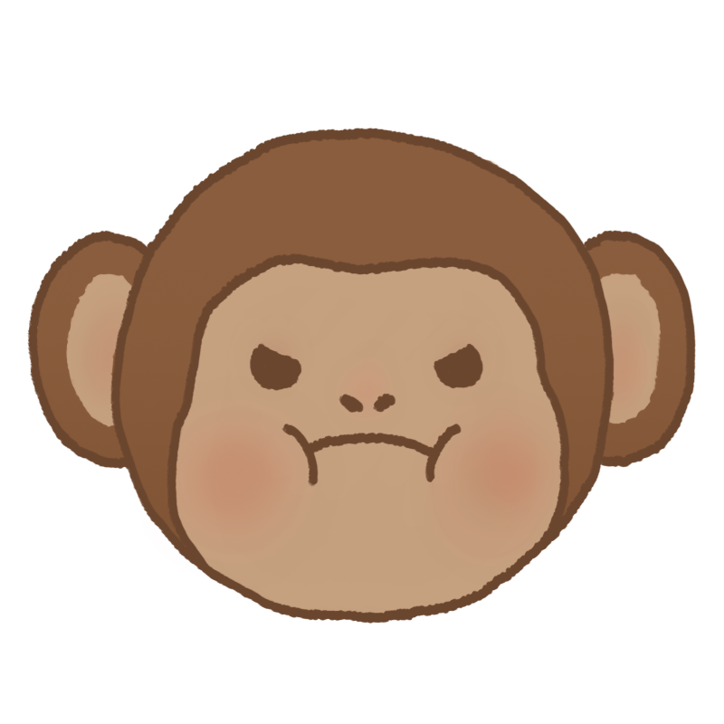

Home Page



What we do:
Monkey Foodies is a website set out to promote restaurant discovery and provide recommendations
based on budget, dining purpose, and dietary preferences.
We also provide third party services to make reservations to the preliminary restuarants we have
listed in the Restaurant page.
Who this is for:
This website is for anyone looking for a new restaurant to try, from families to couples, to business professionals and tourists.
Behind Monkey Foodies:
At Monkey Foodies we try to to provide a convenient experiece by providing restaurant reccomendations together with restaurant booking all in one place, with a wide variety of restaurants to choose from.